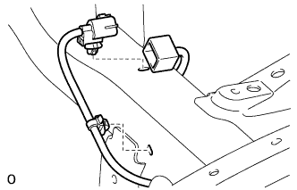
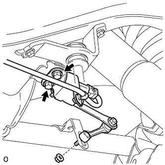
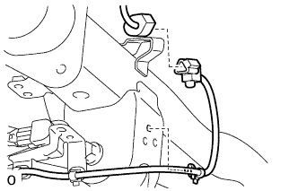
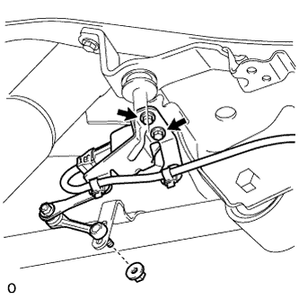

HEIGHT CONTROL SENSOR (for Rear Side) > REMOVAL |
| 1. DISCONNECT CABLE FROM NEGATIVE BATTERY TERMINAL |
| 2. REMOVE REAR WHEEL |
| 3. REMOVE REAR HEIGHT CONTROL SENSOR SUB-ASSEMBLY LH |
 |
Disconnect the connector and 2 clamps.
 |
Remove the 2 bolts, nut and sensor.
| 4. REMOVE REAR HEIGHT CONTROL SENSOR SUB-ASSEMBLY RH |
 |
Disconnect the connector and 2 clamps.
 |
Remove the 2 bolts, nut and sensor.